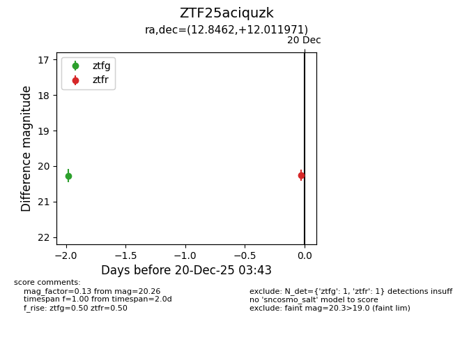
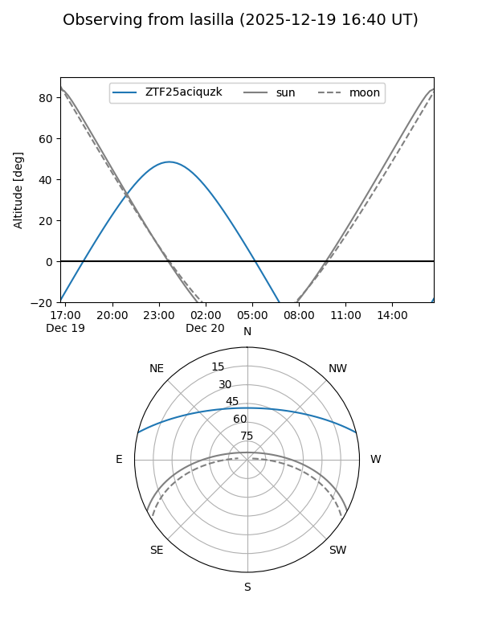
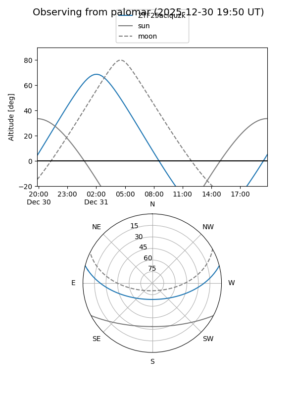
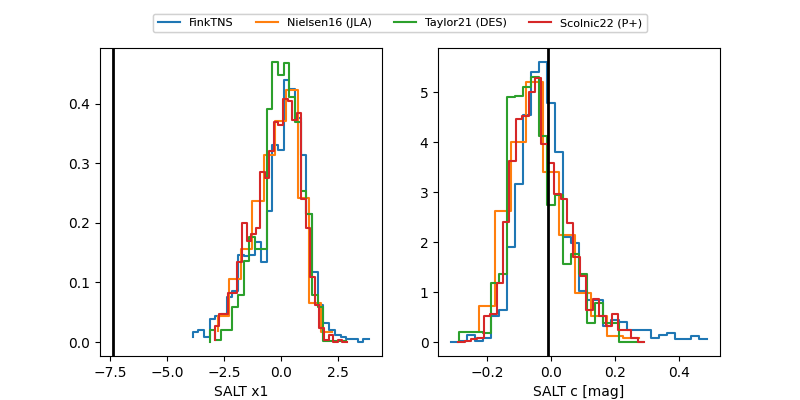

ZTF25aciquzk
Target ZTF25aciquzk at 2025-12-18 11:57
Aliases and brokers:
FINK: fink-portal.org/ZTF25aciquzk
Lasair: lasair-ztf.lsst.ac.uk/objects/ZTF25aciquzk
ALeRCE: alerce.online/object/ZTF25aciquzk
alt names
ZTF25aciquzk (ztf,fink_ztf)
Coordinates:
equatorial (ra, dec) = 12.8462,+12.01197
equatorial (HMS+DMS) = 00:51:23.08,+12:00:43.10
galactic (l, b) = (122.9113,-50.85977)
Photometry
last ztfg=20.27
1 ztfg detections
Lightcurve

Visibility


Additional plots
